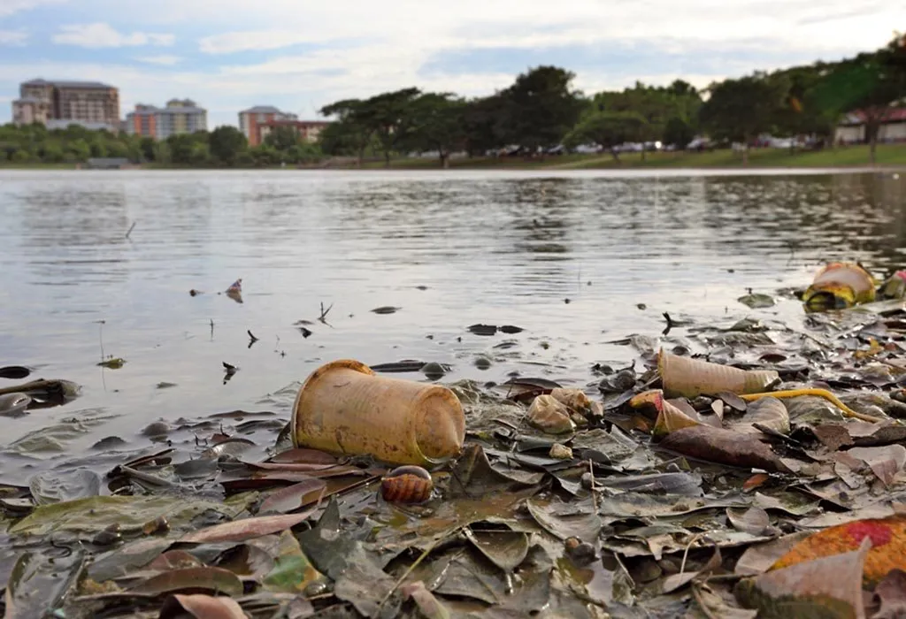

Marathi

जल प्रदूषणाबद्दल माहिती
पाणी प्रदूषण म्हणजे पाण्यात हानिकारक घटक मिसळून त्याच्या गुणवत्तेमध्ये होणारी हानी, ज्यामुळे पर्यावरण आणि आरोग्यावर गंभीर परिणाम होतो. घरगुती सांडपाणी, औद्योगिक कचरा, शेतीत वापरलेले रासायनिक खत आणि कीटकनाशके, तसेच प्लास्टिक आणि तेलाचा कचरा ही पाणी प्रदूषणाची प्रमुख कारणे आहेत. यामुळे जलचर जीवांचा नाश होतो, जैवविविधतेला धोका निर्माण होतो, आणि जलजन्य रोगांचा प्रसार वाढतो. दूषित पाणी शेतीसाठी वापरल्यास उत्पादन क्षमतेवर परिणाम होतो आणि शुद्ध पिण्याचे पाणी कमी होते. पाणी प्रदूषण रोखण्यासाठी सांडपाण्याचे योग्य व्यवस्थापन करणे, रासायनिक खतांचा वापर मर्यादित ठेवणे, पुनर्वापरास प्रोत्साहन देणे आणि जलस्त्रोत स्वच्छ ठेवणे आवश्यक आहे. यासोबतच, जनजागृती मोहिमा राबवून लोकांना पाण्याच्या संवर्धनाचे महत्त्व पटवून देणे गरजेचे आहे. पाणी हा आपला मौल्यवान निसर्गस्रोत असून त्याचे संरक्षण करणे ही प्रत्येकाची जबाबदारी आहे, जेणेकरून भावी पिढ्यांसाठी शुद्ध पाणी उपलब्ध राहील.
Click here to go home
By Vipeksh Patidar 6B33
Thank You!!!